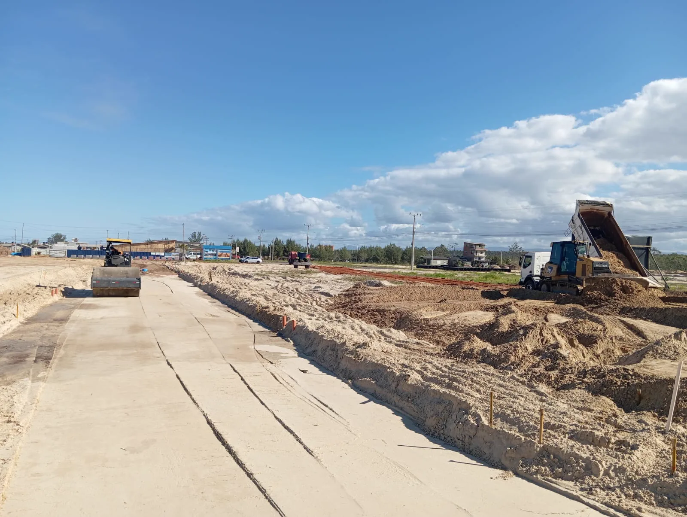
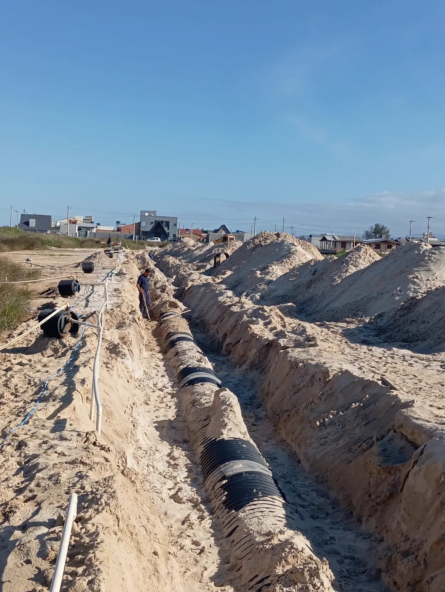
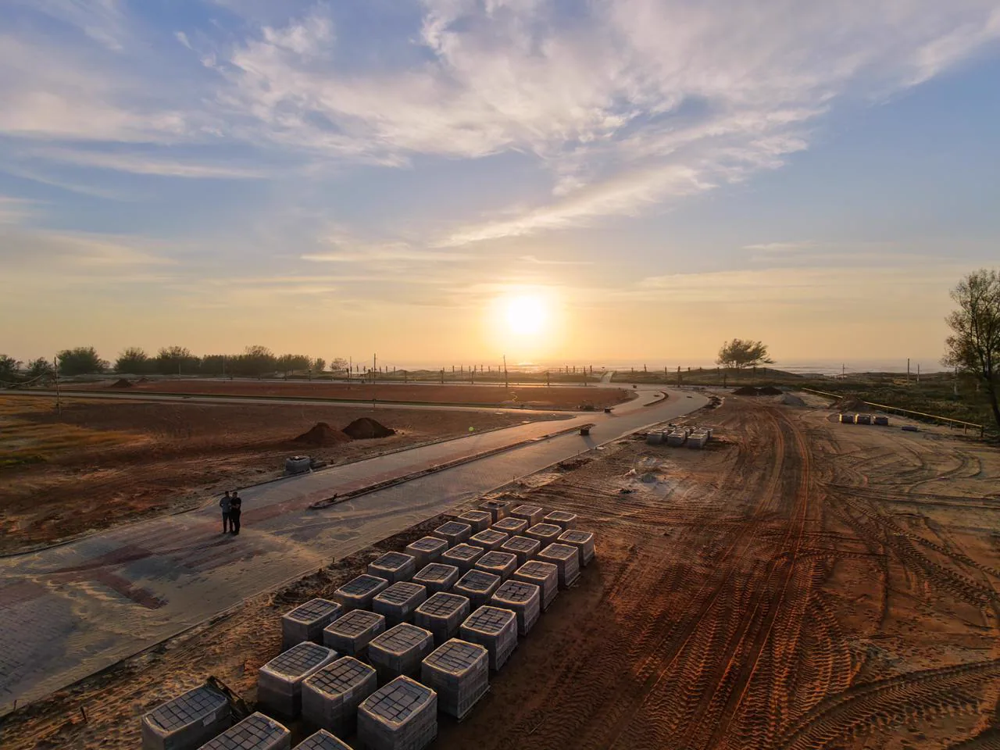
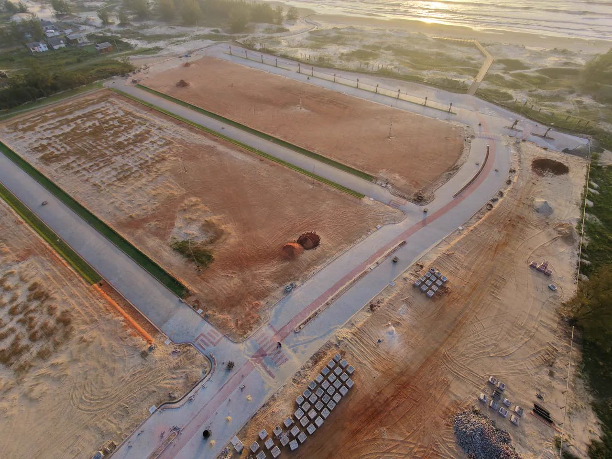

01 / Base
Terraplenagem
Movimentação de solo e preparação da área para as próximas frentes.

Passo de Torres / Santa Catarina
Entre a paisagem do litoral e o trabalho de engenharia que dá forma a um novo lugar.
O projeto
O Portofino é um empreendimento residencial em Passo de Torres, próximo ao mar. O projeto apresenta uma passarela de acesso à praia sobre as dunas e áreas preservadas, conforme as informações divulgadas pelo próprio empreendimento.
Nos registros de obra reunidos aqui, a Monlote mostra as frentes de infraestrutura documentadas: preparação do terreno, redes de esgoto, drenagem e água, pavimentação e urbanismo. As imagens revelam o trabalho que estrutura o espaço antes da vida acontecer nele.
O empreendimento é apresentado oficialmente por SanFerreira Incorporações e Gaivota Imóveis. Para disponibilidade de lotes, características comerciais e situação atual, consulte o canal oficial do Portofino.
Site oficial do PortofinoFilme da obra
Uma seleção de tomadas aéreas do acervo do Portofino, reunidas em um filme breve.
Por trás da paisagem
Uma leitura visual das frentes de infraestrutura registradas no acervo da obra.

Movimentação de solo e preparação da área para as próximas frentes.

Infraestrutura enterrada que organiza o fluxo da água e atende as vias.

Execução do piso que conecta os espaços do empreendimento.

Vias e espaços externos ganham escala, acabamento e paisagem.

Acervo Portofino
Fotografias selecionadas do acervo de 2025. Clique para ampliar.
As fotografias e tomadas aéreas desta página foram selecionadas da pasta de imagens fornecida para o projeto. O acervo contém registros de 2025.
As informações sobre o residencial e seu acesso à praia foram consultadas no site oficial do Portofino. Consulte esse canal para dados comerciais e atualizados.
Engenharia para novos lugares
Converse com a Monlote sobre infraestrutura e urbanização.
Fale com a Monlote